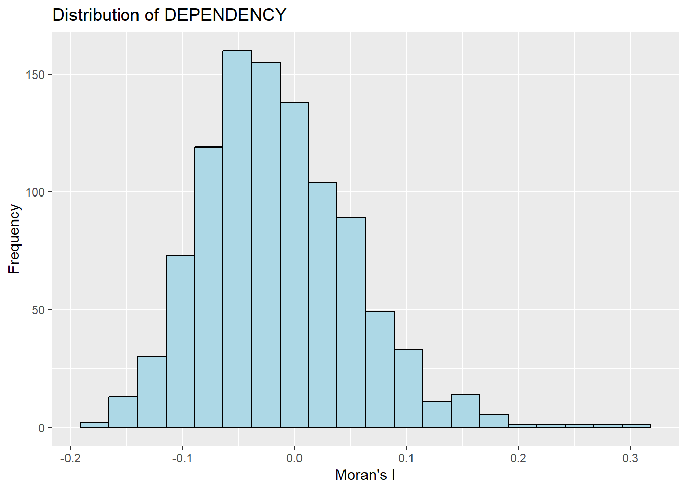
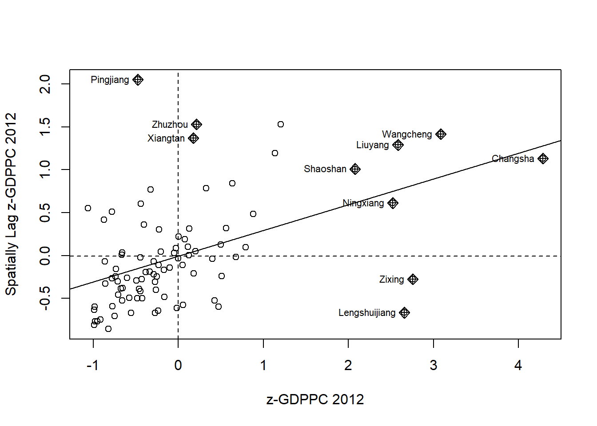
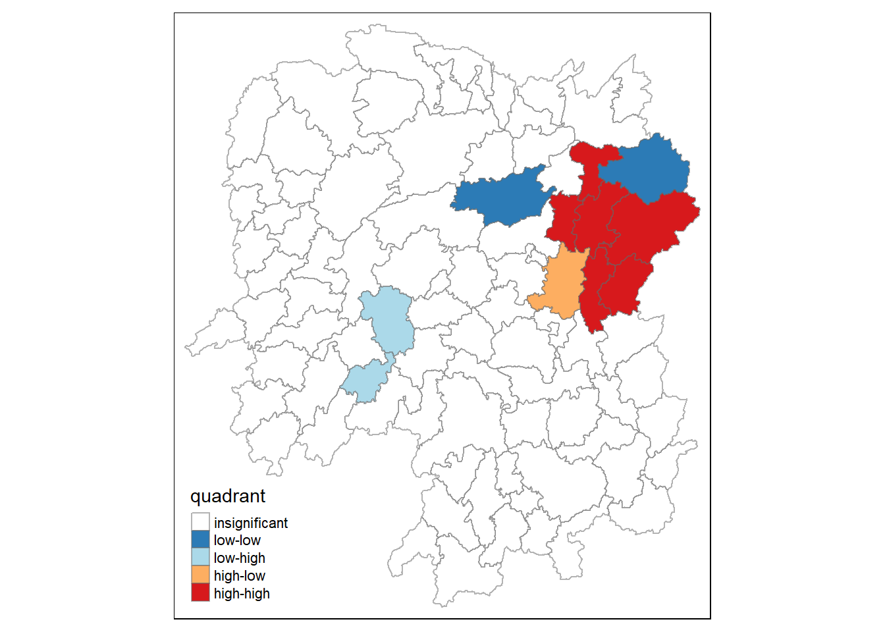

pacman::p_load(sf, spdep, tmap, tidyverse, here)Hand on ex 2 - Chap 4 Global and Local Measures of Spatial Autocorrelation
Overview:
Step 1: Check and load packages
**We will use the additional “here” package
Step 2: Loading Data into R
We first generate the shape file path:
shapefile_path <- here("data", "dataHunan", "geospatial")
shapefile_path[1] "D:/f4sared/ISSS624/data/dataHunan/geospatial"Next we load in the shape file using the path generated:
hunan <- st_read(dsn = shapefile_path, layer = "Hunan")Reading layer `Hunan' from data source
`D:\f4sared\ISSS624\data\dataHunan\geospatial' using driver `ESRI Shapefile'
Simple feature collection with 88 features and 7 fields
Geometry type: POLYGON
Dimension: XY
Bounding box: xmin: 108.7831 ymin: 24.6342 xmax: 114.2544 ymax: 30.12812
Geodetic CRS: WGS 84We check the loaded shapefile:
glimpse(hunan)Rows: 88
Columns: 8
$ NAME_2 <chr> "Changde", "Changde", "Changde", "Changde", "Changde", "Cha…
$ ID_3 <int> 21098, 21100, 21101, 21102, 21103, 21104, 21109, 21110, 211…
$ NAME_3 <chr> "Anxiang", "Hanshou", "Jinshi", "Li", "Linli", "Shimen", "L…
$ ENGTYPE_3 <chr> "County", "County", "County City", "County", "County", "Cou…
$ Shape_Leng <dbl> 1.869074, 2.360691, 1.425620, 3.474325, 2.289506, 4.171918,…
$ Shape_Area <dbl> 0.10056190, 0.19978745, 0.05302413, 0.18908121, 0.11450357,…
$ County <chr> "Anxiang", "Hanshou", "Jinshi", "Li", "Linli", "Shimen", "L…
$ geometry <POLYGON [°]> POLYGON ((112.0625 29.75523..., POLYGON ((112.2288 …We generate the csv file path:
csv_path <- here("data", "dataHunan", "aspatial", "Hunan_2012.csv")
csv_path[1] "D:/f4sared/ISSS624/data/dataHunan/aspatial/Hunan_2012.csv"We then load the csv file:
hunan_2012 <- read_csv(csv_path)Rows: 88 Columns: 29
── Column specification ────────────────────────────────────────────────────────
Delimiter: ","
chr (2): County, City
dbl (27): avg_wage, deposite, FAI, Gov_Rev, Gov_Exp, GDP, GDPPC, GIO, Loan, ...
ℹ Use `spec()` to retrieve the full column specification for this data.
ℹ Specify the column types or set `show_col_types = FALSE` to quiet this message.Step 3: Prepare the data
We perform a relational join:
**Auto detect, join by “County”
hunan <- left_join(hunan, hunan_2012)Joining, by = "County"Step 3: Visualize the Regional Development Indicator
**Note: qtm() belongs to tmap
**qtm() offers less control, for more professional option, use tm_shape instead
equal <- tm_shape(hunan)+
tm_fill("GDPPC", n=5, style = "equal")+
tm_borders(alpha = 0.5)+
tm_layout(main.title = "Equal interval classification")
quantile <- tm_shape(hunan)+
tm_fill("GDPPC", n=5, style = "quantile")+
tm_borders(alpha=0.5)+
tm_layout(main.title = "Equal quantile classification")
tmap_arrange(equal,
quantile,
asp=1,
ncol=2)
Minor notes:
Useful Links:
https://bookdown.org/nicohahn/making_maps_with_r5/docs/tmap.html
https://www.rdocumentation.org/packages/classInt/versions/0.4-8/topics/classIntervals
style = pretty: Rounds interval boundaries to whole numbers. Default setting.
style = equal: Splits the variable into intervals of equal length. Should only be used if the variable follows an uniform distribution.
style = quantile: Splits the variable into quantiles. Consequently there are the same number of observations in each interval.
style = jenks: Identifies groups with similar values and maximizes the difference between them.
style = cont: Displays many colors over a continuous palette.
style = cat: Colors each category individually for categorical data.
Step 4: Compute the spatial weights
Construct the spatial weight based on the “Queen” contiguity:
**polyn2b means: polygons to neighbor list
wm_q <- poly2nb(hunan, queen=TRUE)**Question:
What is the order of the poly2nb here ? How many layers of neighbors are considered here ?
It appears poly2nb only consider the first order neighbor.
Useful Link:
**Note: for more robust option use style B
**This is because style W will create weakness for the polygon at the edges due to less neighbor
Taken from:
Style can take values “W”, “B”, “C”, “U”, “minmax” and “S”. B is the basic binary coding, W is row standardised (sums over all links to n), C is globally standardised (sums over all links to n), U is equal to C divided by the number of neighbours (sums over all links to unity), while S is the variance-stabilizing coding scheme proposed by Tiefelsdorf et al. 1999, p. 167-168 (sums over all links to n).
Generate the row standardized weight matrix:
rswm_q <- nb2listw(wm_q, style="W", zero.policy =TRUE)
rswm_qCharacteristics of weights list object:
Neighbour list object:
Number of regions: 88
Number of nonzero links: 448
Percentage nonzero weights: 5.785124
Average number of links: 5.090909
Weights style: W
Weights constants summary:
n nn S0 S1 S2
W 88 7744 88 37.86334 365.9147Step 5: Moran’s I
Take not that for the Moran’s I test, there are 2 methods:
Analytical Method:
This is a single step calculation.Monte Carlo Method:
For Monte Carlo Method, we will take samples randomly with replacements to create lots and lot of datasets. For each of the datasets, we will then compute the Moran’s I value. We will then plot a histogram of the values. The resultant Moran’s I value should be as far as possible away from the mean for a good indication of spatial auto correlation.
Useful ink for study:
Moran’s I Test:
**moran.test() belongs to spdep
**Are we testing against randomization or normality ?
moran.test(hunan$GDPPC, listw=rswm_q, zero.policy = TRUE, na.action = na.omit)
Moran I test under randomisation
data: hunan$GDPPC
weights: rswm_q
Moran I statistic standard deviate = 4.7351, p-value = 1.095e-06
alternative hypothesis: greater
sample estimates:
Moran I statistic Expectation Variance
0.300749970 -0.011494253 0.004348351 Useful Link:
https://bookdown.org/lexcomber/brunsdoncomber2e/morans-i-an-index-of-autocorrelation.html >> Moran’ I eigen value code
https://www.youtube.com/watch?v=_FtR878eic4 >> Moran’s I explained
https://www.youtube.com/watch?v=MPcNT0KUym0 >> Moran’s I ranging with eigen values
When Moran’s I is 0, it means the points are distributed randomly across the space.
When Moran’s I is 1, it means that similar values tend to cluster.
Our P-value is 0.000001, which is really significant.
We calculate the Moran’s I eigen value range:
**Note: The Moran’s I range is dependent on the inputs !
moran.range <- function(lw) {
wmat <- listw2mat(lw)
return(range(eigen((wmat + t(wmat))/2)$values))
}
moran.range(rswm_q)[1] -0.733384 1.032489Our Moran’s estimate is 0.300 which is closer to 1.032 than -0.733.
Monte Carlo Moran’s I:
set.seed(1234)
bperm <- moran.mc(hunan$GDPPC, listw = rswm_q, nsim = 999, zero.policy = TRUE, na.action = na.omit)
bperm
Monte-Carlo simulation of Moran I
data: hunan$GDPPC
weights: rswm_q
number of simulations + 1: 1000
statistic = 0.30075, observed rank = 1000, p-value = 0.001
alternative hypothesis: greaterHere we observe a similar Moran’s I value above.
However, the p-value is now less significant as compared to the first test.
Plot the Monte Carlo Moran’s I:
**Why Monte Carlo ?
**Monte Carlo is a statistical method that generates multiple datasets using random sampling.
mean(bperm$res[1:999])[1] -0.01504572var(bperm$res[1:999])[1] 0.004371574summary(bperm$res[1:999]) Min. 1st Qu. Median Mean 3rd Qu. Max.
-0.18339 -0.06168 -0.02125 -0.01505 0.02611 0.27593 hist(bperm$res,
freq=TRUE,
breaks=20,
xlab="Simulated Moran's I")
abline(v=0,
col="red") 
Plot using ggplot:
Useful Links:
Create a dataframe:
xx <- data.frame(bperm$res)colnames(xx)[1] <- "res" Plot using ggplot:
ggplot(data=xx, aes(x= as.numeric(`res`)))+
geom_histogram(bins=20,
color="black",
fill="light blue") +
labs(title = "Distribution of DEPENDENCY",
x = "Moran's I",
y = "Frequency")
Step 6: Geary’s C
Geary’s C test:
geary.test(hunan$GDPPC, listw = rswm_q)
Geary C test under randomisation
data: hunan$GDPPC
weights: rswm_q
Geary C statistic standard deviate = 3.6108, p-value = 0.0001526
alternative hypothesis: Expectation greater than statistic
sample estimates:
Geary C statistic Expectation Variance
0.6907223 1.0000000 0.0073364 Here we see a small p-value of 0.0001 which makes it statistically significant.
For Geary’s C, 1 means pure randomization. < 1 means clustering. > 1 means dispersed.
Our value is 0.69, which tends towards some clustering.
Monte Carlo Geary’s C:
set.seed(1234)
bperm=geary.mc(hunan$GDPPC,
listw=rswm_q,
nsim=999)
bperm
Monte-Carlo simulation of Geary C
data: hunan$GDPPC
weights: rswm_q
number of simulations + 1: 1000
statistic = 0.69072, observed rank = 1, p-value = 0.001
alternative hypothesis: greaterHere, we see a higher P-Value which is less statistically significant.
The statistic value remains to be similar.
Plot the Monte Carlo:
mean(bperm$res[1:999])[1] 1.004402var(bperm$res[1:999])[1] 0.007436493summary(bperm$res[1:999]) Min. 1st Qu. Median Mean 3rd Qu. Max.
0.7142 0.9502 1.0052 1.0044 1.0595 1.2722 hist(bperm$res, freq=TRUE, breaks=20, xlab="Simulated Geary c")
abline(v=1, col="red") 
Step 7: Spatial Correlogram
Correlogram allows us the ability to study the variation of the spatial correlation as it evolves across space. In a certain manner, it allows us to get a feel of the gradient as the lag increases. For our purposes, the lag refers mainly to the spatial distance. In other cases, the lag can be that of time. For example, the weather today may be highly correlated with the weather the next day and the day after. However, from the 4th day onward, we observe less and less correlation.
Useful Links:
Moran’s I
MI_corr <- sp.correlogram(wm_q,
hunan$GDPPC,
order=6,
method="I",
style="W")
plot(MI_corr)
print(MI_corr)Spatial correlogram for hunan$GDPPC
method: Moran's I
estimate expectation variance standard deviate Pr(I) two sided
1 (88) 0.3007500 -0.0114943 0.0043484 4.7351 2.189e-06 ***
2 (88) 0.2060084 -0.0114943 0.0020962 4.7505 2.029e-06 ***
3 (88) 0.0668273 -0.0114943 0.0014602 2.0496 0.040400 *
4 (88) 0.0299470 -0.0114943 0.0011717 1.2107 0.226015
5 (88) -0.1530471 -0.0114943 0.0012440 -4.0134 5.984e-05 ***
6 (88) -0.1187070 -0.0114943 0.0016791 -2.6164 0.008886 **
---
Signif. codes: 0 '***' 0.001 '**' 0.01 '*' 0.05 '.' 0.1 ' ' 1As we increase the order of lag, the Moran’s I value decreases. From a lag value of 3 onwards, we observe less indication of clustering.
Geary’s C
GC_corr <- sp.correlogram(wm_q,
hunan$GDPPC,
order=6,
method="C",
style="W")
plot(GC_corr)
print(GC_corr)Spatial correlogram for hunan$GDPPC
method: Geary's C
estimate expectation variance standard deviate Pr(I) two sided
1 (88) 0.6907223 1.0000000 0.0073364 -3.6108 0.0003052 ***
2 (88) 0.7630197 1.0000000 0.0049126 -3.3811 0.0007220 ***
3 (88) 0.9397299 1.0000000 0.0049005 -0.8610 0.3892612
4 (88) 1.0098462 1.0000000 0.0039631 0.1564 0.8757128
5 (88) 1.2008204 1.0000000 0.0035568 3.3673 0.0007592 ***
6 (88) 1.0773386 1.0000000 0.0058042 1.0151 0.3100407
---
Signif. codes: 0 '***' 0.001 '**' 0.01 '*' 0.05 '.' 0.1 ' ' 1As we increase the lag, the C value increases, which shows less clustering. From a lag of 3 onwards, we observe less clustering.
Step 8: Cluster and Outlier Analysis
Ever wondered why the local Moran’s I value is bigger than 1 ?
This has to do with the eigen values, check the useful link below:
Compute Local Moran I:
fips <- order(hunan$County)
localMI <- localmoran(hunan$GDPPC, rswm_q)
head(localMI) Ii E.Ii Var.Ii Z.Ii Pr(z != E(Ii))
1 -0.001468468 -2.815006e-05 4.723841e-04 -0.06626904 0.9471636
2 0.025878173 -6.061953e-04 1.016664e-02 0.26266425 0.7928094
3 -0.011987646 -5.366648e-03 1.133362e-01 -0.01966705 0.9843090
4 0.001022468 -2.404783e-07 5.105969e-06 0.45259801 0.6508382
5 0.014814881 -6.829362e-05 1.449949e-03 0.39085814 0.6959021
6 -0.038793829 -3.860263e-04 6.475559e-03 -0.47728835 0.6331568printCoefmat(data.frame(localMI[fips,], row.names=hunan$County[fips]), check.names=FALSE) Ii E.Ii Var.Ii Z.Ii Pr.z....E.Ii..
Anhua -2.2493e-02 -5.0048e-03 5.8235e-02 -7.2467e-02 0.9422
Anren -3.9932e-01 -7.0111e-03 7.0348e-02 -1.4791e+00 0.1391
Anxiang -1.4685e-03 -2.8150e-05 4.7238e-04 -6.6269e-02 0.9472
Baojing 3.4737e-01 -5.0089e-03 8.3636e-02 1.2185e+00 0.2230
Chaling 2.0559e-02 -9.6812e-04 2.7711e-02 1.2932e-01 0.8971
Changning -2.9868e-05 -9.0010e-09 1.5105e-07 -7.6828e-02 0.9388
Changsha 4.9022e+00 -2.1348e-01 2.3194e+00 3.3590e+00 0.0008
Chengbu 7.3725e-01 -1.0534e-02 2.2132e-01 1.5895e+00 0.1119
Chenxi 1.4544e-01 -2.8156e-03 4.7116e-02 6.8299e-01 0.4946
Cili 7.3176e-02 -1.6747e-03 4.7902e-02 3.4200e-01 0.7324
Dao 2.1420e-01 -2.0824e-03 4.4123e-02 1.0297e+00 0.3032
Dongan 1.5210e-01 -6.3485e-04 1.3471e-02 1.3159e+00 0.1882
Dongkou 5.2918e-01 -6.4461e-03 1.0748e-01 1.6338e+00 0.1023
Fenghuang 1.8013e-01 -6.2832e-03 1.3257e-01 5.1198e-01 0.6087
Guidong -5.9160e-01 -1.3086e-02 3.7003e-01 -9.5104e-01 0.3416
Guiyang 1.8240e-01 -3.6908e-03 3.2610e-02 1.0305e+00 0.3028
Guzhang 2.8466e-01 -8.5054e-03 1.4152e-01 7.7931e-01 0.4358
Hanshou 2.5878e-02 -6.0620e-04 1.0167e-02 2.6266e-01 0.7928
Hengdong 9.9964e-03 -4.9063e-04 6.7742e-03 1.2742e-01 0.8986
Hengnan 2.8064e-02 -3.2160e-04 3.7597e-03 4.6294e-01 0.6434
Hengshan -5.8201e-03 -3.0437e-05 5.1076e-04 -2.5618e-01 0.7978
Hengyang 6.2997e-02 -1.3046e-03 2.1865e-02 4.3486e-01 0.6637
Hongjiang 1.8790e-01 -2.3019e-03 3.1725e-02 1.0678e+00 0.2856
Huarong -1.5389e-02 -1.8667e-03 8.1030e-02 -4.7503e-02 0.9621
Huayuan 8.3772e-02 -8.5569e-04 2.4495e-02 5.4072e-01 0.5887
Huitong 2.5997e-01 -5.2447e-03 1.1077e-01 7.9685e-01 0.4255
Jiahe -1.2431e-01 -3.0550e-03 5.1111e-02 -5.3633e-01 0.5917
Jianghua 2.8651e-01 -3.8280e-03 8.0968e-02 1.0204e+00 0.3076
Jiangyong 2.4337e-01 -2.7082e-03 1.1746e-01 7.1800e-01 0.4728
Jingzhou 1.8270e-01 -8.5106e-04 2.4363e-02 1.1759e+00 0.2396
Jinshi -1.1988e-02 -5.3666e-03 1.1334e-01 -1.9667e-02 0.9843
Jishou -2.8680e-01 -2.6305e-03 4.4028e-02 -1.3543e+00 0.1756
Lanshan 6.3334e-02 -9.6365e-04 2.0441e-02 4.4972e-01 0.6529
Leiyang 1.1581e-02 -1.4948e-04 2.5082e-03 2.3422e-01 0.8148
Lengshuijiang -1.7903e+00 -8.2129e-02 2.1598e+00 -1.1623e+00 0.2451
Li 1.0225e-03 -2.4048e-07 5.1060e-06 4.5260e-01 0.6508
Lianyuan -1.4672e-01 -1.8983e-03 1.9145e-02 -1.0467e+00 0.2952
Liling 1.3774e+00 -1.5097e-02 4.2601e-01 2.1335e+00 0.0329
Linli 1.4815e-02 -6.8294e-05 1.4499e-03 3.9086e-01 0.6959
Linwu -2.4621e-03 -9.0703e-06 1.9258e-04 -1.7676e-01 0.8597
Linxiang 6.5904e-02 -2.9028e-03 2.5470e-01 1.3634e-01 0.8916
Liuyang 3.3688e+00 -7.7502e-02 1.5180e+00 2.7972e+00 0.0052
Longhui 8.0801e-01 -1.1377e-02 1.5538e-01 2.0787e+00 0.0376
Longshan 7.5663e-01 -1.1100e-02 3.1449e-01 1.3690e+00 0.1710
Luxi 1.8177e-01 -2.4855e-03 3.4249e-02 9.9561e-01 0.3194
Mayang 2.1852e-01 -5.8773e-03 9.8049e-02 7.1663e-01 0.4736
Miluo 1.8704e+00 -1.6927e-02 2.7925e-01 3.5715e+00 0.0004
Nan -9.5789e-03 -4.9497e-04 6.8341e-03 -1.0988e-01 0.9125
Ningxiang 1.5607e+00 -7.3878e-02 8.0012e-01 1.8274e+00 0.0676
Ningyuan 2.0910e-01 -7.0884e-03 8.2306e-02 7.5356e-01 0.4511
Pingjiang -9.8964e-01 -2.6457e-03 5.6027e-02 -4.1698e+00 0.0000
Qidong 1.1806e-01 -2.1207e-03 2.4747e-02 7.6396e-01 0.4449
Qiyang 6.1966e-02 -7.3374e-04 8.5743e-03 6.7712e-01 0.4983
Rucheng -3.6992e-01 -8.8999e-03 2.5272e-01 -7.1814e-01 0.4727
Sangzhi 2.5053e-01 -4.9470e-03 6.8000e-02 9.7972e-01 0.3272
Shaodong -3.2659e-02 -3.6592e-05 5.0546e-04 -1.4510e+00 0.1468
Shaoshan 2.1223e+00 -5.0227e-02 1.3668e+00 1.8583e+00 0.0631
Shaoyang 5.9499e-01 -1.1253e-02 1.3012e-01 1.6807e+00 0.0928
Shimen -3.8794e-02 -3.8603e-04 6.4756e-03 -4.7729e-01 0.6332
Shuangfeng 9.2835e-03 -2.2867e-03 3.1516e-02 6.5174e-02 0.9480
Shuangpai 8.0591e-02 -3.1366e-04 8.9838e-03 8.5358e-01 0.3933
Suining 3.7585e-01 -3.5933e-03 4.1870e-02 1.8544e+00 0.0637
Taojiang -2.5394e-01 -1.2395e-03 1.4477e-02 -2.1002e+00 0.0357
Taoyuan 1.4729e-02 -1.2039e-04 8.5103e-04 5.0903e-01 0.6107
Tongdao 4.6482e-01 -6.9870e-03 1.9879e-01 1.0582e+00 0.2900
Wangcheng 4.4220e+00 -1.1067e-01 1.3596e+00 3.8873e+00 0.0001
Wugang 7.1003e-01 -7.8144e-03 1.0710e-01 2.1935e+00 0.0283
Xiangtan 2.4530e-01 -3.6457e-04 3.2319e-03 4.3213e+00 0.0000
Xiangxiang 2.6271e-01 -1.2703e-03 2.1290e-02 1.8092e+00 0.0704
Xiangyin 5.4525e-01 -4.7442e-03 7.9236e-02 1.9539e+00 0.0507
Xinhua 1.1810e-01 -6.2649e-03 8.6001e-02 4.2409e-01 0.6715
Xinhuang 1.5725e-01 -4.1820e-03 3.6648e-01 2.6667e-01 0.7897
Xinning 6.8928e-01 -9.6674e-03 2.0328e-01 1.5502e+00 0.1211
Xinshao 5.7578e-02 -8.5932e-03 1.1769e-01 1.9289e-01 0.8470
Xintian -7.4050e-03 -5.1493e-03 1.0877e-01 -6.8395e-03 0.9945
Xupu 3.2406e-01 -5.7468e-03 5.7735e-02 1.3726e+00 0.1699
Yanling -6.9021e-02 -5.9211e-04 9.9306e-03 -6.8667e-01 0.4923
Yizhang -2.6844e-01 -2.2463e-03 4.7588e-02 -1.2202e+00 0.2224
Yongshun 6.3064e-01 -1.1350e-02 1.8830e-01 1.4795e+00 0.1390
Yongxing 4.3411e-01 -9.0735e-03 1.5088e-01 1.1409e+00 0.2539
You 7.8750e-02 -7.2728e-03 1.2116e-01 2.4714e-01 0.8048
Yuanjiang 2.0004e-04 -1.7760e-04 2.9798e-03 6.9181e-03 0.9945
Yuanling 8.7298e-03 -2.2981e-06 2.3221e-05 1.8121e+00 0.0700
Yueyang 4.1189e-02 -1.9768e-04 2.3113e-03 8.6085e-01 0.3893
Zhijiang 1.0476e-01 -7.8123e-04 1.3100e-02 9.2214e-01 0.3565
Zhongfang -2.2685e-01 -2.1455e-03 3.5927e-02 -1.1855e+00 0.2358
Zhuzhou 3.2864e-01 -5.2432e-04 7.2391e-03 3.8688e+00 0.0001
Zixing -7.6849e-01 -8.8210e-02 9.4057e-01 -7.0144e-01 0.4830Append output to dataframe:
hunan.localMI <- cbind(hunan,localMI) %>%
rename(Pr.Ii = Pr.z....E.Ii..)Map the local Moran I
tm_shape(hunan.localMI) +
tm_fill(col = "Ii",
style = "pretty",
palette = "RdBu",
title = "local moran statistics") +
tm_borders(alpha = 0.5)Variable(s) "Ii" contains positive and negative values, so midpoint is set to 0. Set midpoint = NA to show the full spectrum of the color palette.
**Question, why is the Moran’s I value here > 1 ?
Map Local Moran I P-value:
tm_shape(hunan.localMI) +
tm_fill(col = "Pr.Ii",
breaks=c(-Inf, 0.001, 0.01, 0.05, 0.1, Inf),
palette="-Blues",
title = "local Moran's I p-values") +
tm_borders(alpha = 0.5)
Plot both maps together:
localMI.map <- tm_shape(hunan.localMI) +
tm_fill(col = "Ii",
style = "pretty",
title = "local moran statistics") +
tm_borders(alpha = 0.5)
pvalue.map <- tm_shape(hunan.localMI) +
tm_fill(col = "Pr.Ii",
breaks=c(-Inf, 0.001, 0.01, 0.05, 0.1, Inf),
palette="-Blues",
title = "local Moran's I p-values") +
tm_borders(alpha = 0.5)
tmap_arrange(localMI.map, pvalue.map, asp=1, ncol=2)Variable(s) "Ii" contains positive and negative values, so midpoint is set to 0. Set midpoint = NA to show the full spectrum of the color palette.
Step 9: Creating the LISA Cluster Map:
LISA stands for “Local Indication of Spatial Association”.
The first step to generating the LISA is to plot the Moran Scatterplot.
Plot Moran’s scatterplot:
Useful link:
Moran’s plot is interesting because it plots the variable under study as the X-Axis, while the lagged variable will be plotted as the Y-Axis. The lagged variable in our cases is the average value of the neighbor surrounding our individual polygon. If the average neighbor value is close to the own value, the point will then fall on a straight line. The straight line is our Moran’s I.
Take note that the top left quadrant and the bottom right signals to us that the variable of a polygon is not similar to the values the neighbor.
nci <- moran.plot(hunan$GDPPC, rswm_q,
labels=as.character(hunan$County),
xlab="GDPPC 2012",
ylab="Spatially Lag GDPPC 2012")
Plot Moran’s scatterplot with standardized variable:
Why do we need to do this ? What is the use ?
hunan$Z.GDPPC <- scale(hunan$GDPPC) %>% as.vector nci2 <- moran.plot(hunan$Z.GDPPC, rswm_q,
labels=as.character(hunan$County),
xlab="z-GDPPC 2012",
ylab="Spatially Lag z-GDPPC 2012")
Preparing LISA map classes:
We create a empty vector based on the number of rows in the localMI:
quadrant <- vector(mode="numeric",length=nrow(localMI))Center the variable of interest around the mean:
DV <- hunan$GDPPC - mean(hunan$GDPPC) Center the local Moran’s I around the mean:
C_mI <- localMI[,1] - mean(localMI[,1]) Set the statistical significance level for the local Moran:
signif <- 0.05 Perform the first filter:
**Note the order here is questionable, need to clarify further
quadrant[DV >0 & C_mI>0] <- 4
quadrant[DV <0 & C_mI<0] <- 1
quadrant[DV <0 & C_mI>0] <- 2
quadrant[DV >0 & C_mI<0] <- 3Place non-significant Moran in category 0:
quadrant[localMI[,5]>signif] <- 0Plotting the LISA Map:
Interpreting the LISA Map:
hunan.localMI$quadrant <- quadrant
colors <- c("#ffffff", "#2c7bb6", "#abd9e9", "#fdae61", "#d7191c")
clusters <- c("insignificant", "low-low", "low-high", "high-low", "high-high")
tm_shape(hunan.localMI) +
tm_fill(col = "quadrant",
style = "cat",
palette = colors[c(sort(unique(quadrant)))+1],
labels = clusters[c(sort(unique(quadrant)))+1],
popup.vars = c("")) +
tm_view(set.zoom.limits = c(11,17)) +
tm_borders(alpha=0.5)
Step 10: Getis & Ord’s G-Statistics
Useful Link:
**Note Gi* includes the central point in the evaluation while Gi does not.
Deriving Spatial Weight Matrix
Distance Based Matrix
Get Centroid:
Value 1:
longitude <- map_dbl(hunan$geometry, ~st_centroid(.x)[[1]])Value 2:
latitude <- map_dbl(hunan$geometry, ~st_centroid(.x)[[2]])Bind the coordinate into 1 object:
coords <- cbind(longitude, latitude)Determine the cutoff distance using the k nearest neighbors:
#coords <- coordinates(hunan)
k1 <- knn2nb(knearneigh(coords))
k1dists <- unlist(nbdists(k1, coords, longlat = TRUE))
summary(k1dists) Min. 1st Qu. Median Mean 3rd Qu. Max.
24.79 32.57 38.01 39.07 44.52 61.79 Compute the fixed distance weight matrix:
wm_d62 <- dnearneigh(coords, 0, 62, longlat = TRUE)
wm_d62Neighbour list object:
Number of regions: 88
Number of nonzero links: 324
Percentage nonzero weights: 4.183884
Average number of links: 3.681818 Convert into spatial weights object
wm62_lw <- nb2listw(wm_d62, style = 'B')
summary(wm62_lw)Characteristics of weights list object:
Neighbour list object:
Number of regions: 88
Number of nonzero links: 324
Percentage nonzero weights: 4.183884
Average number of links: 3.681818
Link number distribution:
1 2 3 4 5 6
6 15 14 26 20 7
6 least connected regions:
6 15 30 32 56 65 with 1 link
7 most connected regions:
21 28 35 45 50 52 82 with 6 links
Weights style: B
Weights constants summary:
n nn S0 S1 S2
B 88 7744 324 648 5440Adaptive distance weight Matrix
Here we will enforce the condition that the number of neighbor for each polygon has to be 8:
knn <- knn2nb(knearneigh(coords, k=8))
knnNeighbour list object:
Number of regions: 88
Number of nonzero links: 704
Percentage nonzero weights: 9.090909
Average number of links: 8
Non-symmetric neighbours listConvert to spatial weight object:
knn_lw <- nb2listw(knn, style = 'B')
summary(knn_lw)Characteristics of weights list object:
Neighbour list object:
Number of regions: 88
Number of nonzero links: 704
Percentage nonzero weights: 9.090909
Average number of links: 8
Non-symmetric neighbours list
Link number distribution:
8
88
88 least connected regions:
1 2 3 4 5 6 7 8 9 10 11 12 13 14 15 16 17 18 19 20 21 22 23 24 25 26 27 28 29 30 31 32 33 34 35 36 37 38 39 40 41 42 43 44 45 46 47 48 49 50 51 52 53 54 55 56 57 58 59 60 61 62 63 64 65 66 67 68 69 70 71 72 73 74 75 76 77 78 79 80 81 82 83 84 85 86 87 88 with 8 links
88 most connected regions:
1 2 3 4 5 6 7 8 9 10 11 12 13 14 15 16 17 18 19 20 21 22 23 24 25 26 27 28 29 30 31 32 33 34 35 36 37 38 39 40 41 42 43 44 45 46 47 48 49 50 51 52 53 54 55 56 57 58 59 60 61 62 63 64 65 66 67 68 69 70 71 72 73 74 75 76 77 78 79 80 81 82 83 84 85 86 87 88 with 8 links
Weights style: B
Weights constants summary:
n nn S0 S1 S2
B 88 7744 704 1300 23014Computing Gi Statistics
Using Fixed Distance
fips <- order(hunan$County)
gi.fixed <- localG(hunan$GDPPC, wm62_lw)
gi.fixed [1] 0.436075843 -0.265505650 -0.073033665 0.413017033 0.273070579
[6] -0.377510776 2.863898821 2.794350420 5.216125401 0.228236603
[11] 0.951035346 -0.536334231 0.176761556 1.195564020 -0.033020610
[16] 1.378081093 -0.585756761 -0.419680565 0.258805141 0.012056111
[21] -0.145716531 -0.027158687 -0.318615290 -0.748946051 -0.961700582
[26] -0.796851342 -1.033949773 -0.460979158 -0.885240161 -0.266671512
[31] -0.886168613 -0.855476971 -0.922143185 -1.162328599 0.735582222
[36] -0.003358489 -0.967459309 -1.259299080 -1.452256513 -1.540671121
[41] -1.395011407 -1.681505286 -1.314110709 -0.767944457 -0.192889342
[46] 2.720804542 1.809191360 -1.218469473 -0.511984469 -0.834546363
[51] -0.908179070 -1.541081516 -1.192199867 -1.075080164 -1.631075961
[56] -0.743472246 0.418842387 0.832943753 -0.710289083 -0.449718820
[61] -0.493238743 -1.083386776 0.042979051 0.008596093 0.136337469
[66] 2.203411744 2.690329952 4.453703219 -0.340842743 -0.129318589
[71] 0.737806634 -1.246912658 0.666667559 1.088613505 -0.985792573
[76] 1.233609606 -0.487196415 1.626174042 -1.060416797 0.425361422
[81] -0.837897118 -0.314565243 0.371456331 4.424392623 -0.109566928
[86] 1.364597995 -1.029658605 -0.718000620
attr(,"cluster")
[1] Low Low High High High High High High High Low Low High Low Low Low
[16] High High High High Low High High Low Low High Low Low Low Low Low
[31] Low Low Low High Low Low Low Low Low Low High Low Low Low Low
[46] High High Low Low Low Low High Low Low Low Low Low High Low Low
[61] Low Low Low High High High Low High Low Low High Low High High Low
[76] High Low Low Low Low Low Low High High Low High Low Low
Levels: Low High
attr(,"gstari")
[1] FALSE
attr(,"call")
localG(x = hunan$GDPPC, listw = wm62_lw)
attr(,"class")
[1] "localG"Join the data to dataframe:
hunan.gi <- cbind(hunan, as.matrix(gi.fixed)) %>%
rename(gstat_fixed = as.matrix.gi.fixed.)gdppc <- qtm(hunan, "GDPPC")
Gimap <-tm_shape(hunan.gi) +
tm_fill(col = "gstat_fixed",
style = "pretty",
palette="-RdBu",
title = "local Gi") +
tm_borders(alpha = 0.5)
tmap_arrange(gdppc, Gimap, asp=1, ncol=2)Variable(s) "gstat_fixed" contains positive and negative values, so midpoint is set to 0. Set midpoint = NA to show the full spectrum of the color palette.
We observe high level of significance of spatial concentration in the most central area highlighted by the red zone. However, we observe a steep change in the significance gradient of the local Gi score.
Using adaptive distance:
Compute using adaptive weights:
fips <- order(hunan$County)
gi.adaptive <- localG(hunan$GDPPC, knn_lw)
hunan.gi <- cbind(hunan, as.matrix(gi.adaptive)) %>%
rename(gstat_adaptive = as.matrix.gi.adaptive.)gdppc<- qtm(hunan, "GDPPC")
Gimap <- tm_shape(hunan.gi) +
tm_fill(col = "gstat_adaptive",
style = "pretty",
palette="-RdBu",
title = "local Gi") +
tm_borders(alpha = 0.5)
tmap_arrange(gdppc,
Gimap,
asp=1,
ncol=2)Variable(s) "gstat_adaptive" contains positive and negative values, so midpoint is set to 0. Set midpoint = NA to show the full spectrum of the color palette.
Again, we observe a high level of spatial concentration significance in the areas highlighted in red. However, this time, we get a larger patch and a more gentle gradient distribution.
Thoughts:
So apparently using different measures of distance weight matrix can have quite a big effect on the interpretation of the hotspot analysis. The question then lies in the motivation for selecting the different kinds of spatial weight matrix since they can produce different results.